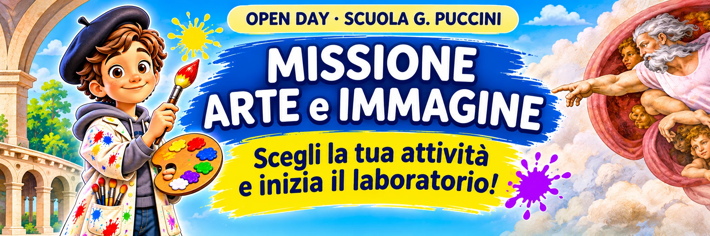
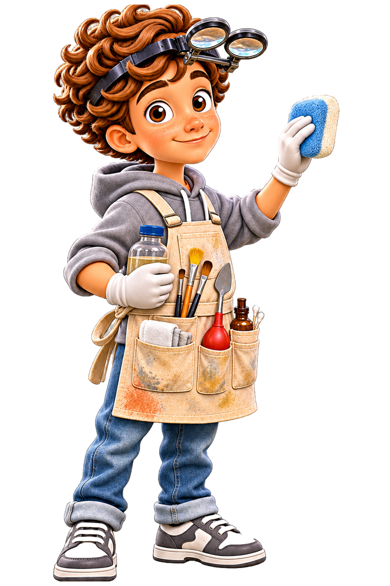

Vuoi riportare alla luce un capolavoro o creare un disegno tutto tuo?


Pulisci virtualmente l’affresco di Michelangelo con la Wishab e rispondi alle domande.
Disegna sulla tela digitale, scegli i colori, cambia lo spessore del tratto e salva la tua opera.